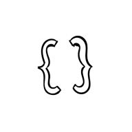

Project
Infotainment system design to enhance driving safety
Summary
I helped to develop a safe, user-friendly infotainment system for all age groups
Responsibilities
User Experience Design
User Interface Design
Project
Infotainment system design to enhance driving safety
Summary
I helped to develop a safe, user-friendly infotainment system for all age groups
Responsibilities
User Experience Design
User Interface Design
Develop
Iteration 1
I started this project by accumulating data, via building a paper prototype. This paper prototype was a foundation to build upon. I gathered participants of various age groups and let them customise their dashboard. This led to insights in terms of their needs and similarities:
- All participants prefer a full overview map
- All participants would like to have their applications on the left side of the screen
- Younger participants (ranging roughly from 18 – 30) see more benefit in using applications and therefore, have a more filled screen
Iteration 2
During iteration 2 a mid-fidelity prototype was developed, to give participants an impression of how their custom build prototype would look and feel in a digital environment.
In terms of functionality I found that a lot of younger attendants had an easy time navigating through the system while driving. They were still satisfied with the choices they made in terms of set-up, which gave me the possibility to configure a solid infotainment system.
Iteration 3
The infotainment system needed visual improvement, leading to a redesign based on testing results. I streamlined the layout, removed irrelevant apps and focused on essentials by prioritizing safety in the design.
This design was considered to be elegant and user-friendly. Even older aged participants found it easy to use, though some said they wouldn’t use features like making calls. I’ve tested the system again with various contestants and focused on finalisation.
Deliver
The last week was dedicated to minor fixes, such as bugs and more in depth development of the system settings.
The product is consistent with the assignment given. A lot of contestants felt safe while driving and using the digital infotainment system. This was a conformation for me that the product was successful, also all essential parts were available and found to be accessible.